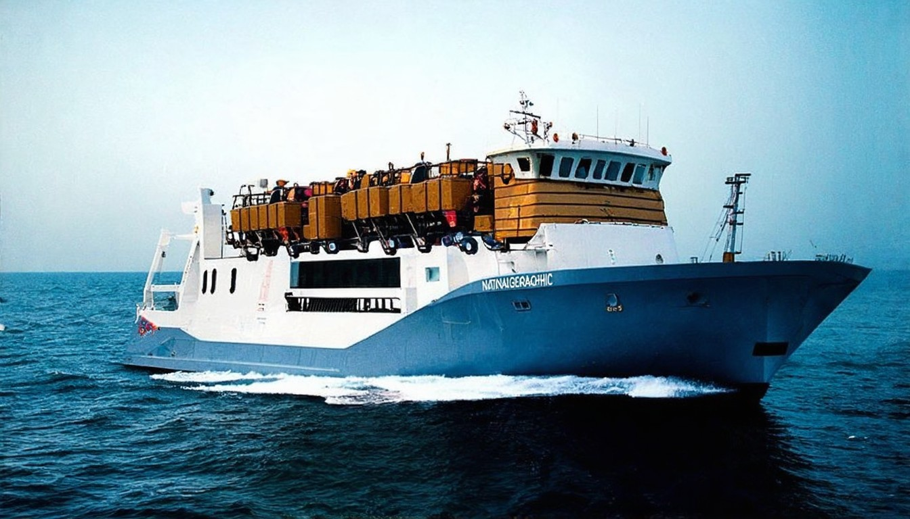
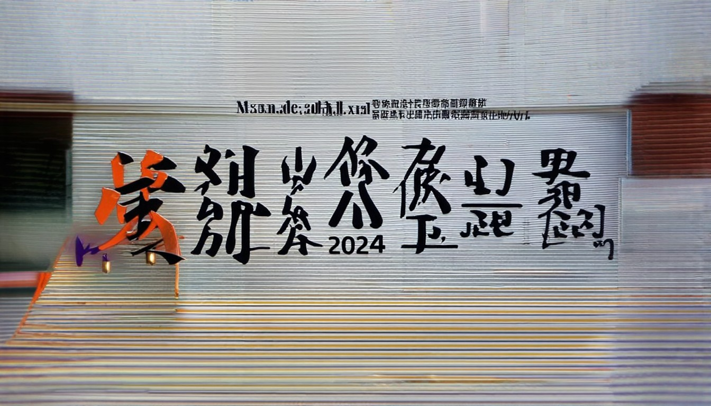
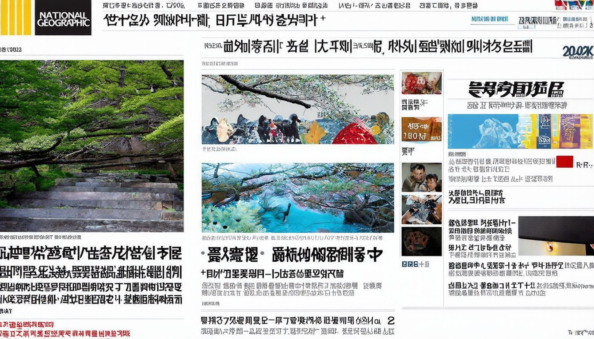

今天全世界都在看的新闻2026.4.2 - 今日头条
特朗普发表全国讲话. 今天全世界都在看的新闻2026.4.2. 当地时间4月1日，美国总统特朗普发表讲话，自行宣称对伊朗战事取得“快速、决定性、压倒性胜利”。
2026年04月12日 · 全球热点速递
← 返回今日新闻特朗普发表全国讲话. 今天全世界都在看的新闻2026.4.2. 当地时间4月1日，美国总统特朗普发表讲话，自行宣称对伊朗战事取得“快速、决定性、压倒性胜利”。
伊朗最新消息：伊朗突成立「祖國衛士」當街槍決國家警察❗️伊朗談判核心被擊斃！ · 港元最後防線失控？ · Ch. · 川普伊朗合作搜刮習家錢袋子？ · 中共官員揭鄭鮮為
[](https://www.worldjourna
# 【新闻大家谈】伊朗局势剧变 美炸岛50次 以色列提前动手！. 主持人：美国总统川普周一（4月6日）发出最后通牒，如果在美东时间周二（4月7日）晚上8点前，伊朗不达成协议，就会在12点前摧毁伊朗的发电厂、桥梁等重要基础设施。而就在一个小时多前，美伊局势出现重大翻转。川普发贴文把行动时间再次延后两周。 下面我们来连线本台记者张亮，张亮您好，原本最后通牒的美东8点，也就是伊朗凌晨的3点30分截止时间
2026年04月12日12:30 AM. 绿卡 永久居民 LPR 川普 特朗普 卢比奥 国务卿. 2026年04月12日12:30 AM. 美国食品价格上涨但一些主食却变便宜.
2026年开年，国际局势风云变幻，中美博弈与中东乱局成为全球焦点，牵动着世界神经。 美国对格陵兰岛的军事野心，引发欧洲盟友强烈不满。丹麦首相直言“动武将
遭中國官媒文字閹割！ · 才爆認愛！ · 川普曝伊朗28艘佈雷艇沉海底！ · 爆破士又來！ · 女全身「連私處也流血」送醫11小時後亡男伴：我沒有！ · 獨／昔2次直升機執勤失事大難不死高雄2
美國伊朗談判：伊朗提交方案設4「紅線」包括解凍資產｜最新 · 【錢夫人巡舖】港元1個月存息4.8厘3個月2.88厘任君選擇 · 張敬軒IG追蹤名單大清洗突unfollow王菀之容祖兒陳卓賢等

新华每日电讯 经济参考 瞭望 半月谈 中证报 上证报 中国记者 中国名牌 中国传媒科技 环球 瞭望东方周刊 参考消息 新华出版社. 北京 天津 河北 山西 辽宁 吉林 上海 江苏 浙江 安徽 福建 江西 山东 河南 湖北 湖南 广东 广西 海南 重庆 四川 贵州 云南 西藏 陕西 甘肃 青海 宁夏 新疆 内蒙古

# 【時事金掃描】伊朗跪了 霍爾木兹海峽開通 金正恩「跳船」了. 【新唐人北京時間2026年04月08日訊】大家好，歡迎收看「時事金掃描」。我是金然。今天是川普對伊朗政權給出最後通牒的日子，在「劍拔弩張」之下各方的鬥智鬥勇簡直是目不暇接。對了，「時事金掃描」YouTube頻道今天也剛好漲到40萬訂閲，除了感恩，還是感恩，謝謝大家的一路陪伴和支持。這是「直擊伊朗大戰」系列特別節目的第35集。要想瞭解
本網站使用相關技術提供更好的閱讀體驗，同時尊重使用者隱私，點這裡瞭解中央社隱私聲明。當您關閉此視窗，代表您同意上述規範。. Your browser does not appear to support Traditional Chinese. Would you like to go to CNA’s English website, “Focus Taiwan”? + 談鄭習會 鄭麗文：有再說
03:12 五日公眾假期今日結束，過去 ... 日｜無綫新聞｜TVB News｜2026/04/07. 37K views · 3 days ago. #國際新聞

北約要變天？懲罰加撤軍川普點北約不忠國！美伊停火！王毅26通電話內幕曝中共快走到頭；加國神韻事件驚動美國會美議員：會了解具體情況【今日頭條】.
# 国际新闻 - 美国之音中文网. Powered by [Translate](https://translate.google.com/). * [跳转到内容](htt

新浪国际热点小时报丨2026年04月05日12时_今日实时国际热点速递 · 1、邦迪远不是最后一个？ · 2、日媒：一伊朗籍男子在日本被殴打致死，日本警方展开调查 · 3、
... 2026-04-12 02:15. More. 國際焦點. 民調落後匈牙利今大選川普搶救現任總理奧 ... 川普「文明滅亡」說的殺傷力有多大？ 2026-04-11 12:13. More. 世界萬象. 載人繞月阿

日本2026版外交蓝皮书针对目前的国际形势表述称：“被称为'后冷战时期'的相对稳定的时代已经终结”。对中国表述是“重要邻国”，此前为“最重要的双边关系之一”。针对伊朗发展
# 【新闻大家谈】突发！川普：坚决不要核武 谈不成或斩首！. 【新唐人北京时间2026年04月11日讯】今日焦点：🔥全面作战：谈不拢就斩首 美军重置史上最强火力｜川普急逼伊放弃核武｜60亿神秘资金｜3200船只积堵霍尔木兹｜C-17运输机搭载超强护卫队｜上万军警｜. 新闻大家谈，谈真知灼见。大家好，我是扶摇，今天是4月10日，周五。. 本期节目的嘉宾是：台湾国防安全研究院研究员 沈明室博士；台湾大
# 【新闻直击】大变在即！川普预告：大重置 美军“海神”失联. 观众朋友您好，欢迎收看《新闻直击》。今天是美东时间4月10日，星期五。我们每天追踪最新热点，带您关注世界动态第一手资讯，首先来看：. ## 一组简讯：. 今天（4月10日）上午，美国总统川普在“真相社交”平台上，突然全大写发文：“世界最强重置！！！”，还连打三个感叹号。在当前局势紧张的情况下，这句话释放什么信号，也引发外界各种猜测。.

2026年4月11日星期六，美国副总统JD 万斯抵达巴基斯坦 · 美国和伊朗在巴基斯坦展开“孤注一掷”的谈判. 美国/伊朗/巴基斯坦.